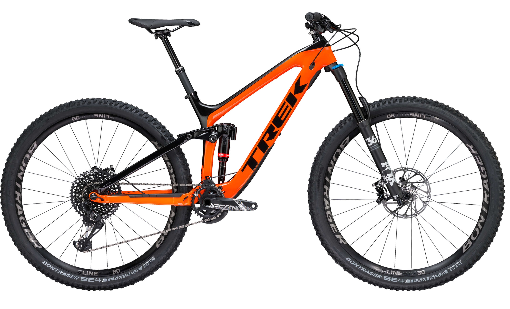

Trek Slash 9.8

Enduro Weapon
Slash is designed from the ground up to conquer the gnarliest enduros, in a 29˝-optimized package that makes this mountain bike the undisputed king of the trail.
Throw down on technical descents and fly back up the mountain. Slash dominates the most demanding trails, with 29˝ wheels on an aggressive, ultra-capable, lightweight carbon frame
Specifications
Frameset
Frame
OCLV Mountain Carbon main frame & seatstay, 1x-specific alloy chainstay, ABP, Boost148, Knock Block, EVO link, E2 tapered head tube, Mino Link, Control Freak internal routing, Carbon Armor, PF92, ISCG 05, G2 Geometry, 150mm travel
Front suspension
Fox Performance 36 Float, GRIP 3-position damper, E2 tapered steerer, Boost110, G2 Geometry w/51mm offset, 160mm travel
Rear suspension
RockShox Deluxe RT3, RE:aktiv with Thru Shaft 3-position damper, tuned by Trek Suspension Lab, 230x57.5mm
Wheels
Wheels
Bontrager Line Elite 30, Tubeless Ready, 108T Rapid Drive, Boost110 front, Boost148 rear, tubeless strips included, valves sold separately
Tires
Bontrager SE4 Team Issue, Tubeless Ready, Core Strength sidewalls, aramid bead, 29x2.40˝
Drivetrain
Shifters
SRAM GX Eagle, 12 speed
Rear derailleur
SRAM GX Eagle, Roller Bearing Clutch
Crank
SRAM Descendant 7k Eagle, 32T Direct Mount X-Sync
Bottom bracket
PF92
Cassette
SRAM GX Eagle, 10-50, 12 speed
Chain
SRAM GX Eagle
Pedals
Not included
Components
Saddle
Bontrager Evoke 2, chromoly rails
Seatpost
Bontrager Drop Line, internal routing, 31.6mm (15.5: 100mm / 17.5 & 18.5: 125mm / 19.5 & 21.5: 150mm)
Handlebar
Bontrager Line Pro, OCLV Carbon, 35mm, 27.5mm rise, 780mm width
Grips
Bontrager Rhythm, dual lock-on
Stem
Bontrager Line Pro, Knock Block, 35mm, 0 degree, 50mm length
Headset
Knock Block Integrated, sealed cartridge bearing, 1-1/8˝ top, 1.5˝ bottom
Brakeset
SRAM Guide RS hydraulic disc
Weight
Weight
17.5" - 14.06 kg / 31.00 lbs
Weight limit
This bike has a maximum total weight limit (combined weight of bicycle, rider, and cargo) of 300 of 136 kg.